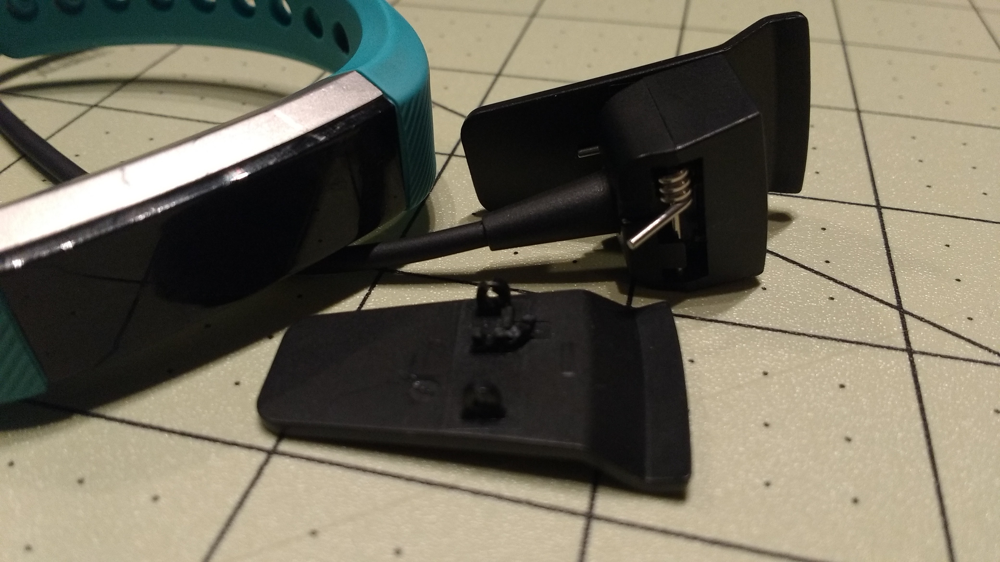
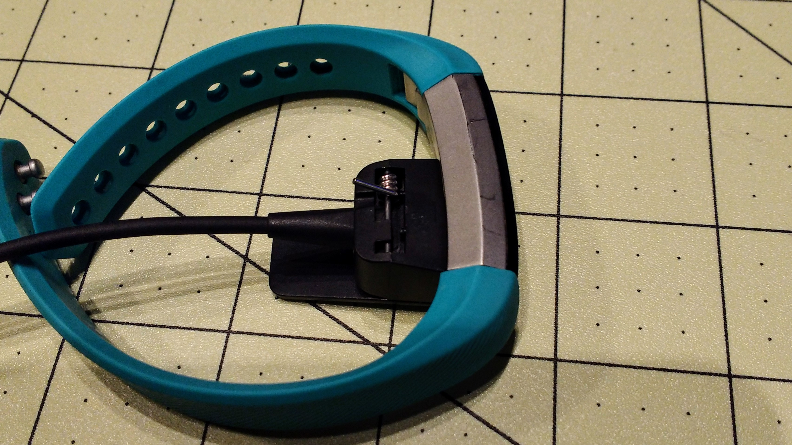
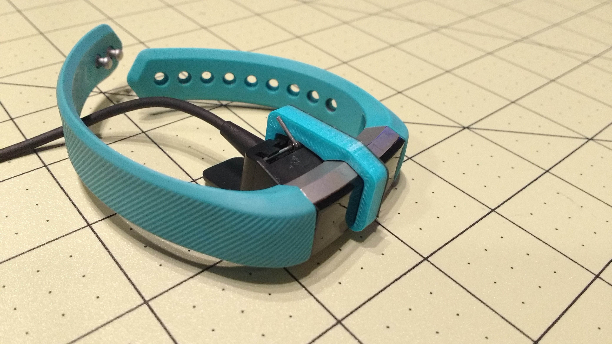

The Problem
My girlfriend’s Fitbit Alta charger broke the other night. These chargers are proprietary connectors and IMO pieces of junk. It seems like Fitbit cut corners anywhere they could when it came to these chargers. For example, what engineer decided it was a great idea to make a six inch charge cable? It is so short that you have to hang the product from an outlet… Anyway, one thing lead to another and one of the “wings” from the clip broke.

The Quick Fix
So I decided, why not print something until we can buy a better charger that will last longer. Below is what I came up with (hosted on Thingiverse or Github).
This clip is designed to slip onto the Alta and the charger to secure them together when it is hanging/charging.


This clip is simple, quick, and her fitbit is now charged. Problem solved.